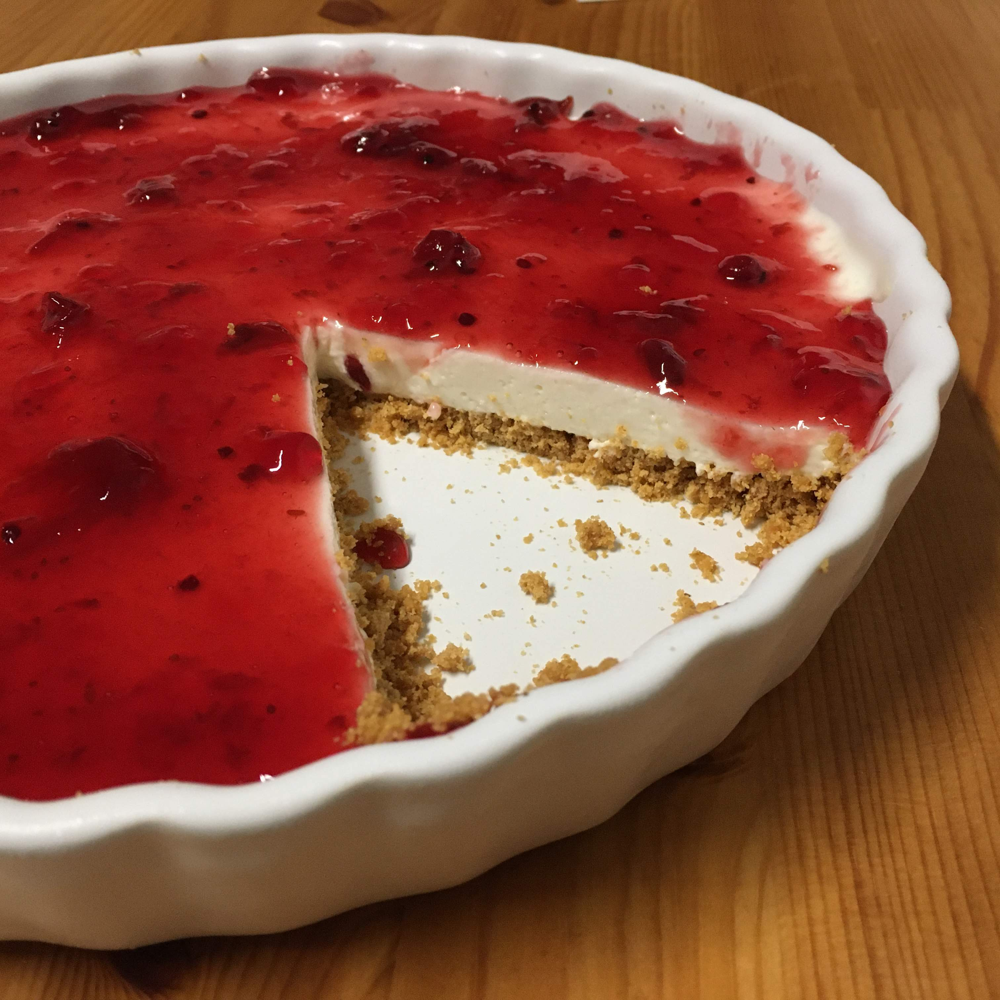

Cheesecake sem forno

Ingredientes
Massa
- 280 g de bolachas digestivas
- 80 g de manteiga derretida
Recheio
- 6 folhas de gelatina ou 12 g (1 envelope) de gelatina em pó sem sabor preparada de acordo com a embalagem
- 150 g de açúcar
- 400 g de queijo fresco em creme para barrar
- 400 g de nata
- sumo de 1/2 limão (opcional)
Cobertura
- 340 g de geleia de frutos vermelhos
Modo de preparo
Massa
- Triturar no processador ou liquidificador as bolachas com a manteiga.
- Forrar uma fôrma de fundo removível ou travessa com a massa, pressionando bem.
Recheio
- Bater todos os ingredientes no processador ou liquidificador para incorporar bem.
- Dispor o recheio sobre a base e levar ao frigorífico até solidificar.
Cobertura
- Antes de servir, cobrir a cheesecake com a geleia.
Observação:
Receita do Pingo Doce.